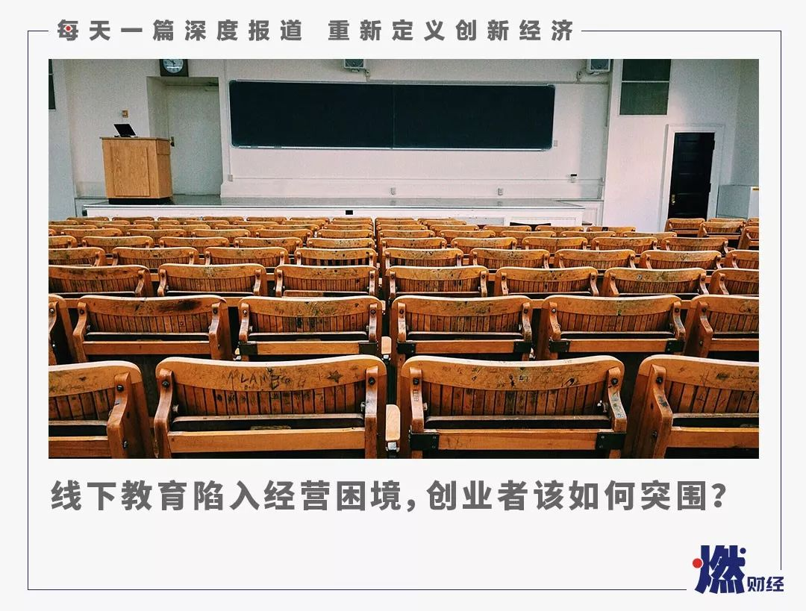

一位教育培训创业者的抗疫计划：我们准备这样扛过三个月 | 深网
原文链接 备份链接 作者 | 安然 编辑 | 康晓 出品｜深网·腾讯小满工作室 欢迎下载腾讯新闻APP，阅读更多优质资讯 _编者按：_跨越疫情经济周期，需要中国全行业上下游携手共度难关，深网推出《共克时艰》系列报道，是为第四篇，一位教育创 …

《创新经济战疫指南》，是燃财经在新型肺炎疫情期间推出的特别栏目，关注创新经济企业遇到的新难题、商讨应该采取的新对策，希望能够帮助中小企业一起战胜挑战、把握机会。本文是第4期。查看前3篇请点击《哪些行业正在逆势爆发？》《中小企业生存指南》《差点倒下的生鲜电商又站了起来》。
作者 | 孟亚娜
编辑 | 凌远川
突如其来的新型冠状病毒肺炎，让传统的线下教育成为疫情之下的重灾区。
疫情发生后，大量线下教育培训机构被迫停课。即便是教育行业龙头企业好未来和新东方，此次也受到了冲击。1月20日，武汉学而思和武汉新东方先后发布了停课通知。这两家教育巨头，都曾经受过非典疫情的考验，在疫情发生之后，迅速做出了响应，停课并协调转线上。
新东方董事长俞敏洪，近日公开发文写道，这场疫情，也给新东方带来了严峻考验，新东方地面课堂全面停课。上百万寒假班的学生面临不能上课的局面。如果新东方全部停课退费，新东方就只能关门大吉，七八万老师员工的生计，立刻就成了问题。
“面对疫情最好的方法就是把课堂搬到线上。”俞敏洪提到，新东方的在线系统没准备好，而且大多数老师没有在线授课经验，学生家长是否愿意接受在线上课都是问题。但不管怎样，转变总比坐以待毙要好，否则接近三十年的新东方，将会山崩地裂。
危机往往伴随着机遇。回望2003年的非典一疫，差点让新东方倒闭，但同时也成就了好未来。非典疫情期间，传统线下培训被叫停，网校兴起。传统教育培训机构新东方遭遇了停课退费难题，俞敏洪举债度过危机。而当时的张邦鑫，乘着网校的东风，和几个好友创办了奥数网，也就是学而思网校的前身，顺利将线下的生源成功导流到了线上。
疫情之下，大机构枪支弹药充足，尚可以熬过一劫，但对于一些传统做线下的中小教培机构来说，却是如临大敌，能否活着熬过疫情是个问题。他们面临着来自种种不确定因素的挑战，军心难稳、获客难、退费风险、高额租金和工资开支……
***入不敷出，停业观望***
“每年二月份本来是爆发期，往年春节过后的半个月能做平时一个月的流水，但没想到受疫情影响，到二月底都没办法开业。”线下舞蹈培训机构负责人丽娜告诉燃财经，受疫情影响，她在北京的四家线下门店无法正常开门营业，每个月面临将近20万的资金压力，对她而言简直是毁灭性打击。
“现在也不知道什么时候能开工，我们有可能到五月份都缓不过来。这是我过的最差的一个春节，度日如年。”丽娜说。
过去的2019年，对于教育行业本就是不易的一年，在K12、早教和语培留学机构等领域，多家机构暴雷倒闭。曾经被捧为独角兽的在线少儿思维培训机构成长保资金链断裂倒闭，A股老牌留学机构太傻留学破产清算，年底英语口语培训机构韦博英语欠款关闭。
但未曾想到2020年开年，因为疫情的影响，一些教育培训机构迎来了更大的经营危机。

图 / Pexels
丽娜的情况并非个例。2月6日晚，IT职业教育企业兄弟连教育正式宣告品牌“破产”，成为了新冠肺炎疫情影响下，被现金流压垮的首家线下培训机构。
兄弟连创始人李超发了一封公开信，他在信中提到，兄弟连教育在节前已经非常紧张，缓发工资、全体动员、压缩成本，本来准备在节后招生旺季打个翻身仗，但这次疫情来的如此凶猛、猝不及防，把计划全部打乱了。
疫情之下，线下教培机构入不敷出，大多企业账面上的现金难以撑过三个月，还有多数中小企业甚至连一个月都熬不过。机构何时能正常营业，房租、职工薪资、社保该如何缴纳，学员留存率、续费率该如何保障，一切都成为了未知。
多位艺术、体育类培训、民营幼儿园线下教育机构创业者向燃财经表示，如果疫情继续持续下去几个月，对他们而言将是毁灭性的打击。
同样遭受到打击的还有体培行业，多位体育培训业内人士对燃财经表示，线下场馆关停，目前处于被迫停业中。“对于体培行业转线上也是不现实的，只能坐等恢复营业。”某少儿篮球培训学校负责人张峰说。
民营幼儿园往往采取的是预收费模式，短期内暂停营业并不会造成太大影响。但疫情结束时间未知，一些实力较雄厚的民办国际幼儿园也产生了担忧。“我们的国际幼儿园资历比较久，撑过二月份没问题，但如果疫情战线持续拉长，也会有一定风险。“孩子的故事国际连锁幼儿园董事长王应运说。
”一些传统的线下留学语培中介机构面临着挑战，留学业务的签证申请和雅思托福考试的进行，均受到了影响。“某留学语培机构负责人高益告诉燃财经，“好在我们是纯线上，现在和平时没太大区别，反而生意还会比之前好些，可能就是员工之间的沟通少了点。”
***望星盼月***
***希望疫情早点结束***
疫情发生后，也有一些线下培训机构紧急将课程搬到线上，但短时间多数学生和老师涌入，导致多家第三方教育平台超负荷运转，服务器几近崩盘。
“这个星期我们基本上干了今年一年要做的事情，很多老师和学生都涌上平台上课，导致平台负载率过高。”某在线教育平台负责人王伟告诉燃财经，为了保证平台正常运行，他紧急加了一些负载加速器和带宽。购买带宽需要付费，但他提供给一些学校和机构的服务都是免费的。“其实我们并没有从中盈利。”王伟说。
对于舞蹈、体育和民营幼儿园等线下培训业务而言，将教学搬到线上不太现实，对此机构负责人们只能采取一些直播、社群打卡、提供心理咨询服务等迂回之策。
近日在一些直播平台上，很多从事艺术培训的名师们做起了公益性直播，尝试为疫情下的线下艺术培训机构突破新的出口。依靠直播平台打赏勉强能有一些收入，但这也是只属于为一小部分人开的出口。
“在网上做舞蹈类直播，做的比较好的都是一些很有名气的老师们。像我们这种普通机构，基本上做直播是没人看的，所以就是纯做公益。而且线上课程几乎不赚钱，老师们都不愿意做。”丽娜谈道。
这段时间，她只能通过会员群，鼓励会员们拍摄舞蹈视频进行打卡比赛送课，以此来调动积极性。但如果营业时间遥遥无期，恐怕这种方式也持续不了太久。一些体培机构也采取了类似的打卡机制，“连续四天了，家长学生对打卡的热情都不高，这个时候非常难调动积极性。”张峰说，疫情过后，可能会迎来一波小高峰，目前只能加油把疫情熬过去，但疫情什么时候结束还不知道。
图 / 视觉中国
对于重线下服务的民营幼儿园，面对无法开园营业的现状，也只能积极探索线上教学的新模式。幼儿园面向的是3-6岁的低龄化用户，如何陪伴孩子是家长们的核心诉求。“这段时间，我们给家长提供了一些心理咨询服务，结合前期研发的类似于美国版巧虎的线上产品，教会家长如何带孩子。“王应运说。
但另一方面，他也对疫情发展有所担忧。如果幼儿园迟迟无法正常开学，并且在这段时间不能给予家长提供等值服务的话，很难保证家长不会要求减免学费。
“像音乐、美术、体育、舞蹈这些偏肢体运动的培训，纯线上是很难做到的。我们经过大量的实践验证了，孩子们在学习过程中，有一些肢体的动作，必须需要现场进行纠正和示范。“乐斯教育创始人宫旭生说。艺术类培训机构业务转线上，其实是一种应急方案，对于艺术培训行业，线下教育几乎很难找到线上的完整替代品。
他判断， 疫情结束后线下教育会迎来一个短暂的爆发点。现阶段，机构首先应该做好冬眠的准备，其次也得更多关注疫情结束后，业务如何复苏的问题。
*****军心难稳*****
*****转型线上困难重重*****
面临退费危机的，还有靠线下业务作为主力的少儿英语培训机构。
“我们主打的线下一对一口语教学业务关停了，说服不了家长们以同样的价格转线上，好多都要求退费，我们这种小机构利润很薄，一旦停业不堪设想。而且机构里的外教们最近情绪也很不稳定，吵着喊着要回国。“某地方K12英语培训机构的负责人刘雯告诉燃财经。
一些涉外培训机构的外教们陷入了左右为难。如果机构无法保证收入，外教们接下来的去留也是难题。
“作为全英文授课的国际园所，我们一共有80多名外教，外教们现在其实很纠结。疫情发生后，一些外教情绪比较激动，一方面比较担心安全问题，但另一方面更担心自己的就业问题。而且就算现在回到自己国家，也不太好找工作，回国之后还会被隔离起来。“ 王应运谈道，”好在我们机构短期内还比较稳定，不会影响到外教们的正常收入。“
这场未知的“战疫”到底什么时候结束，尚无定论，但给企业带来的危机是有目共睹的。“疫情不知道什么时候才能控制住，房租、老师们的工资开销都是问题。线下课程多数被叫停了，线上课程客单价较低，竞争也非常大，纯靠线上业务很难维持生存，每天还要处理各种退费，让人焦头烂额。“刘雯说。
受疫情影响，教育部发布《关于2020年春季学期延期开学的通知》，同时各省市逐步叫停寒假线下课外培训。各大教培机构纷纷将业务搬到线上，线上教育迎来了转机，但中小机构的日子依旧不好过，资源流量倾向头部机构，一些在线教育腰部机构普遍产生了获客焦虑。
图 / Pexels
“在线教育太烧钱了，线上获客成本高，是在线教育面临的最大问题，我们用了四五年的时间，花了几千万才打磨出现在线上的这套产品。”王应运告诉燃财经。
在线教育获客成本高是行业的最大痛点，而在线教育机构的获客途径，大多是通过广告投放和销售转化来完成。
新东方在线发布的2019年中报显示，其获客成本虽然要低于行业内水平，但销售费用却还是上涨了25%。而根据好未来2020年财年Q3财报，好未来的销售和营销费用同比增长87.6%，主要由于线上业务的营销费用增加。此前在2019年中，好未来的专家电话会中，曾提到好未来的获客成本达1300元，相比2018年增长了18%。
此外，作为唯一一支实现正向盈利的，在美上市的在线教育中概股跟谁学，虽然在其2019年三季度财报电话会中，披露其2019年累计三季度获客成本仅为545元，低于行业水平，但也不容乐观。跟谁学披露，其采取的计算方式为用Non-GAAP销售费用(5.95亿元)除以付费课程人数。这种算法仅是一种粗略的计算，忽略了公司获客所需时长、真实新课人数、以及支持获取新客的所有人力和财力的支出等因素。
巨头们依旧在打烧钱战，中小型在线教育机构仍在泥潭中挣扎。
在线教育虽多次成为所谓风口行业，但也一度不被看好。受此次新冠肺炎疫情影响，教育部叫停线下培训机构，对于一些被迫将业务转到线上的传统线下教学机构，无疑是雪上加霜。但危机也伴随着机遇，随着“停课不停学”的政策一出，头部在线教育机构们纷纷嗅到了“潜在流量”的味道。

***逆势扩张黄金期***
***在线教育迎来机遇***
针对疫情对高校正常开学和课程教学造成的影响，教育部目前印发了相关指导意见，要求采取政府主导、高校主体、社会参与的方式，共同实施并保障高校在疫情防控期间的在线教学，实现“停课不停教、停课不停学”。截至2月2日，教育部组织22个在线课程平台免费开放在线课程2.4万余门，覆盖了本科12个学科门类，专科高职18个专业大类。
资本市场大受政策鼓舞，A股开市以来，在线教育股二六三、三盛教育、和晶科技、世纪天鸿等逾十只个股多日涨停，股价持续走高。
为响应“停课不停学”的政策，在线教育机构纷纷推出免费线上课程。新东方、好未来、网易有道、跟谁学、51Talk、VIPKID等一些头部在线教育机构纷纷慷慨捐资、成立专项基金、向全国范围内的中小学生提供免费的在线教育课程，向一些学校机构免费提供技术输出。
这些举动也提升了美股和港股资本信心，近日好未来、新东方、跟谁学、朴新教育等股价均有不同程度上涨。
疫情催熟了在线教育行业发展，在“停课不停学”的政策指向下，在线教育逐步渗透到更多家长和学生心中。
相关业内人士分析，头部教育机构在向全国中小学生免费开放平台，将在线教育的概念沉了下去，家长和学生们在疫情的影响下，只能通过在线形式进行学习。对于在线教育来说有一定的推动作用，在线教育迎来了崛起和弯道超车的历史时刻。

图 / Pexels
创新工场合伙人张丽君提到，疫情会加速用户对线上教育的认知，线上教育的渗透率会在短时间内大幅提升，获取用户的转化率也会短时间内提升，获客成本短期内会降低一小段时间之后再恢复。
蓝象资本创始合伙人宁波宇建议道，疫情之下教育行业创始人要做路径创新，不要在自己具备核心优势的点上做改变；初创团队一定要计算好现金流，最大程度保障公司的核心团队，及时沟通解决协商方案；有部分创始人可考虑提前启动下一轮融资计划，不必过度纠结估值；穷尽所有手段，寻求股东帮助。
*题图来源于Pexels。应受访者要求，文中张峰、高益、王伟、刘雯为化名。

— 征集 —
欢迎加入“燃财经创新经济战疫计划”。
疫情之下、行业巨变，为了帮助创新经济企业战胜挑战、把握机会，燃财经推出“创新经济战疫计划”。该计划包含三部分：栏目报道、线上沙龙、行业社群。
栏目报道部分和线上沙龙部分，征集希望给创新经济献计献策、共克时艰的创业者和投资人，参加报道、讨论和互助。欢迎在评论区留言或在后台私信我们，请注明“创业者”或“投资人”。
行业社群部分，征集关注此话题、愿意参与社群的读者，欢迎在后台私信我们，注明“计划”，入群之后我们将提供讨论平台、沙龙直播等后续服务。

你尝试线上学习了吗？体验如何？
欢迎在评论区留下你的故事，我们会在点赞前三（超过20个）的评论里挑选一位网友，送出网易云音乐季卡一张****。文章转载请点击公众号菜单“转载合作”。
一手资讯/硬核报告/每日红包/线下活动！就差你了！快加微信rancaijing02回复“读者”一键上车！


燃财经工作室
点个在看吧😘
微信扫一扫赞赏作者 赞赏
长按二维码向我转账
点个在看吧😘
受苹果公司新规定影响，微信 iOS 版的赞赏功能被关闭，可通过二维码转账支持公众号。
文章已于修改
原文链接 备份链接 作者 | 安然 编辑 | 康晓 出品｜深网·腾讯小满工作室 欢迎下载腾讯新闻APP，阅读更多优质资讯 _编者按：_跨越疫情经济周期，需要中国全行业上下游携手共度难关，深网推出《共克时艰》系列报道，是为第四篇，一位教育创 …
原文链接 备份链接 一场疫情改变了教培行业的局面，这既是在线教育相关公司承担社会责任的时期，也是证明其价值的机会。 记者 | 王一越、邓舒夏、叶雨晨、吴洋洋 实习记者 | 陶紫东、袁颖 编辑 | 倪 妮 制图 | 程 星 寒暑假历来是教 …
原文链接 备份链接 图片来源：视觉中国 记者：肖芳 伍洋宇 周伊雪 编辑：文姝琪 “ 大量的创业公司都面临着现金流的压力，维持6个月以上的现金流被认为是企业能够熬过去的关键。 ” 2020年的春节，疫情突如其来，让创业者们猝不及防。 1 …
原文链接 备份链接 对于2019年就陷入负增长的中国手机零售市场来说，这场疫情无疑是雪上加霜。相对线下渠道的全面收缩，线上渠道亦受影响 文 |《财经》记者 陈潇潇 王凤 编辑 | 谢丽容 往年春节期间，从过完除夕到正月十五，历来是手机销售 …
原文链接 备份链接 李克胜在武汉。图片来源：受访者供图 口述 | 李克胜 整理 | 汪畅 44岁的上海货车司机李克胜，义务承揽运送医疗物资前往武汉的工作，带着7桶泡面，独自踏上千里之路。 返沪后，他马不停蹄，再次踏上赴汉之旅。 他曾接到妻 …